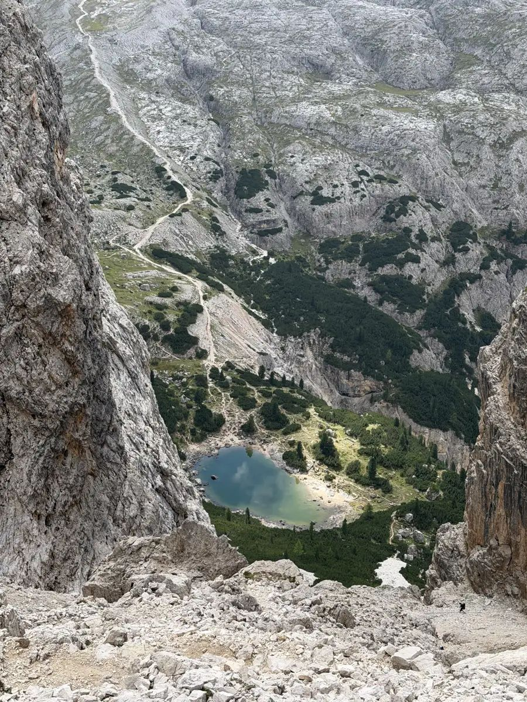
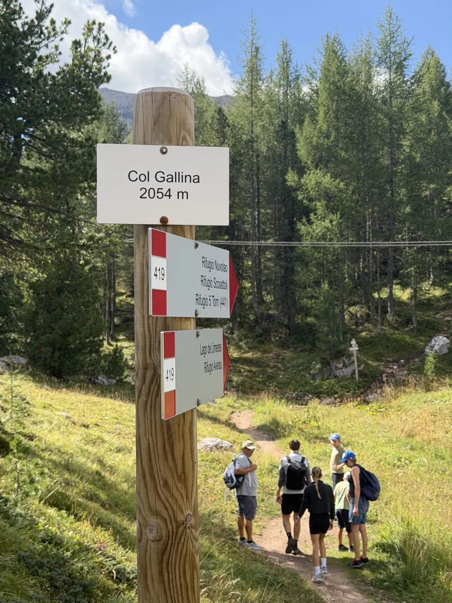
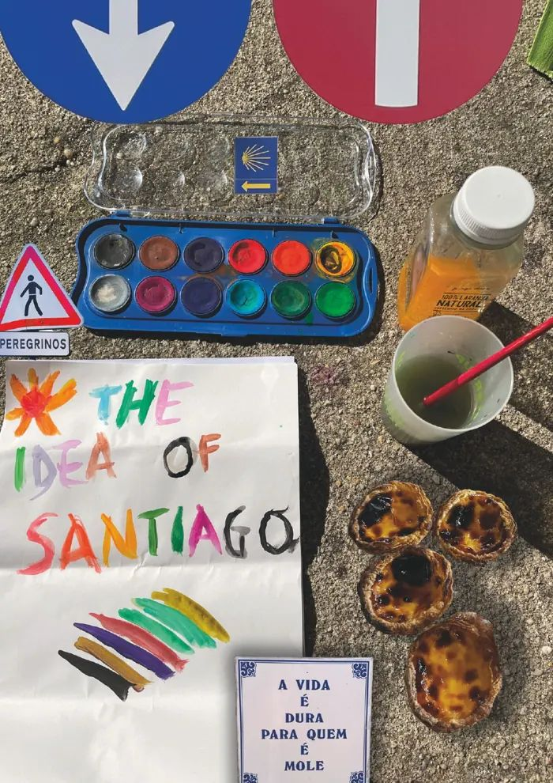
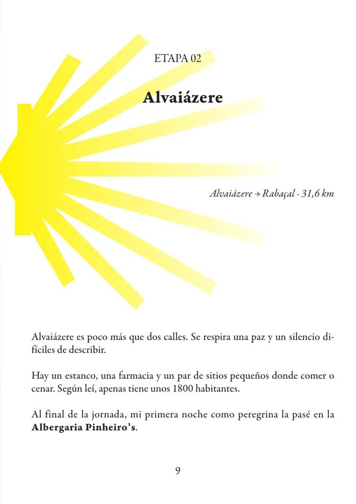
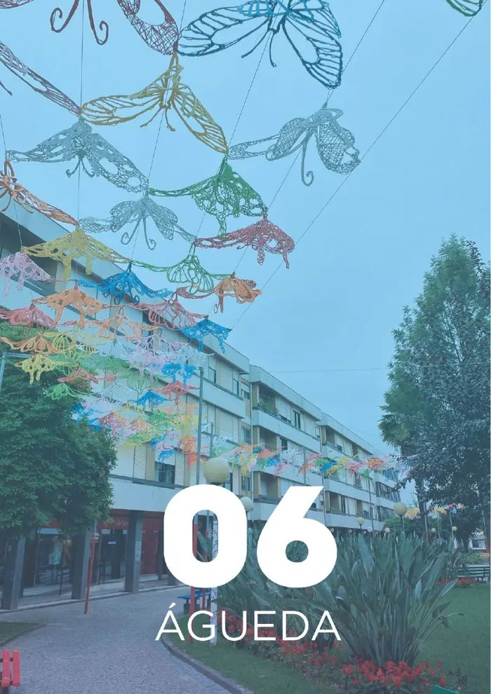
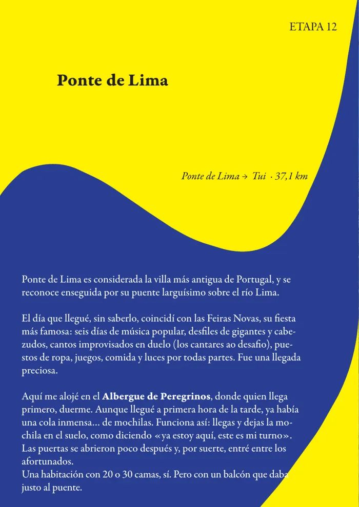
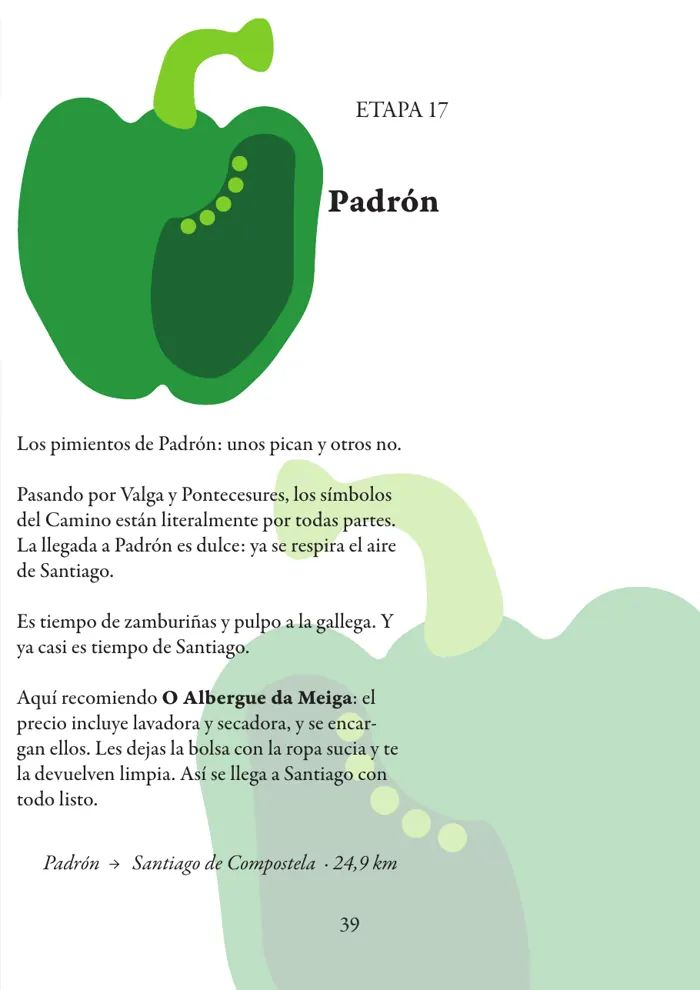

Comunicare
Laurea in Comunicazione e master in Digital Humanities.
0%
L'IA scrive codice. Io so cosa farne.
Frontend developer da 5 anni. Esperienza, visione e cura dei dettagli.
1 / 3
Ho studiato comunicazione a Siena. Poi, a Bologna, ho scoperto che anche il codice può essere un modo di comunicare.
Laurea in Comunicazione e master in Digital Humanities.
Figma, InDesign e impaginazione: prima il disegno, poi il codice.
Frontend developer dal 2022, oggi con Vue 3 e TypeScript.
Mr. APPs srl
San Marino · Remoto
Sviluppo applicazioni web veloci e responsive con Vue 3 (Composition API, SPA e componenti riutilizzabili), TypeScript, Vite e SCSS. Git con GitHub e GitLab, test delle API REST con Postman.
ALTEN Italia
Reggio Emilia · Ibrido
Servizi backend in .NET (C#, Microsoft SQL Server) nel team di sviluppo di Credem: microservizi e API REST su dati bancari, nel rispetto di standard rigorosi di sicurezza e qualità. API con Dapper, strumenti interni per testare gli endpoint con Swagger, code review e deploy.
ALTEN Italia
Bologna · Remoto
Prima esperienza frontend con React (Hooks come useState, useEffect, useContext) su un progetto già in produzione da oltre 3 anni: codice legacy, stili in CSS, deploy su AWS, gestione dei task con Trello.
Cyclando
Modena · In sede · Tirocinio
Ottimizzazione delle prestazioni di un sito WordPress (plugin, colli di bottiglia individuati con GTmetrix), bucket AWS S3 per gli asset pesanti, integrazione delle API HubSpot per il team Sales. Metodologia Agile: stand-up, Scrum, Jira.
South Tours Malaga
Málaga · In sede · Tirocinio
Gestione di un sito WordPress (plugin, aggiornamento dei contenuti, ottimizzazione), primi passi in PHP con ambiente locale XAMPP. Primo team in ufficio in un contesto internazionale, con comunicazione tutta in inglese.
CEI · Madrid
Illustrator · Photoshop · InDesign
HTML5 · CSS3 · SASS · JavaScript · Flexbox · Grid · Git · GitHub
React · TypeScript · Next.js · Express · MongoDB · Prisma · Vite · Figma · Vercel · Netlify · GitHub Copilot
University of Bologna
University of Siena
Dal markup scritto a mano ai framework, dai dati alla grafica: front-end, data visualization, UI/UX, 3D e design. Filtra per disciplina.
Creati con l'IA in 4-5 prompt. I prompt giusti vengono da tre anni di Vue 3: senza di me l'IA non li avrebbe fatti, io senza l'IA sì, solo in più tempo.
Io ho dato direzione e controllo, l'IA ha scritto il codice.
Io ho dato direzione e controllo, l'IA ha scritto il codice.
Io ho dato direzione e controllo, l'IA ha scritto il codice.
Sito per M.A.MO (HK) Ltd: design, sviluppo e indicizzazione su Google.
Prova per assunzione: sito in HTML e CSS.
Prova per assunzione: Index e Home pensate come proposta per il loro sito, con il progetto su Figma.
Prova per assunzione sviluppata in React.
Prova per assunzione costruita con EJS e Leaflet.
Redesign del Register: prototipo interattivo su Figma.
Lavori di grafica con Illustrator, InDesign e Photoshop.
Quando l'IA non esisteva: codice scritto riga per riga, tra Bologna e il primo lavoro.
Ontologia pubblicata come sito, con visualizzazione WebVOWL.
Data visualization con dati gestiti in Python.
Data visualization con dati gestiti in Python.
Progettazione di una biblioteca in 3D, realizzata con Blender.
Sito in JavaScript, pensato anche per mobile.


Dolomiti · 8 tappe





Rivista · InDesign
Sfoglia la rivista ↗Parliamo del tuo prossimo progetto.
gemma97@live.it